Dashboard AdventureWorks PowerBI
1. Visão Geral
Link para o Painel Online: Visão Geral de Vendas
O objetivo principal deste projeto é criar e publicar um painel interativo do Power BI utilizando o conjunto de dados Adventure Works. Esse conjunto de dados, fornecido pela Microsoft, serve como um excelente ambiente de prática para demonstrar habilidades em SQL, Microsoft SQL Server e Power BI.
Os dados podem ser encontrados no link: Bancos de Dados de Exemplo AdventureWorks - SQL Server | Microsoft Learn
1.1 Objetivos
- Demonstração de Habilidades: Ao longo deste projeto, pretendemos demonstrar nossa expertise em SQL, Microsoft SQL Server e Power BI, transformando dados brutos em visualizações acionáveis.
- Painel Interativo: Nosso foco é construir um painel interativo e amigável que permita a exploração fácil do conjunto de dados Adventure Works.
- Visualização de Dados: Aproveitando as capacidades do Power BI, criaremos visualizações impactantes para revelar padrões, tendências e informações comerciais cruciais.
1.2 Estrutura do Projeto
O projeto está organizado em etapas distintas:
- Extração e Limpeza de Dados: Começaremos obtendo o conjunto de dados Adventure Works e realizando sua limpeza usando SQL no Microsoft SQL Server Management Studio (SSMS).
- Importar Dados no Power BI: Em seguida, importaremos o conjunto de dados limpo no Power BI para análise.
- Enriquecimento de Dados com Web Scraping: Aprimoraremos o conjunto de dados adicionando informações de continentes usando web scraping e junção de consultas.
- Modelagem de Dados: Nesta etapa, organizaremos e estruturaremos o modelo de dados no Power BI para obter melhores insights.
- Criação de Visualizações: A etapa final envolve a criação de gráficos e tabelas interativas para apresentar resultados-chave.
2. Extração e Limpeza de Dados no SSMS com SQL
O primeiro passo é fazer o download e atualizar os dados usando o código SQL fornecido pela Microsoft neste Repositório no Github.
Após o download do arquivo de backup (.bak), restaure o banco de dados no Microsoft SQL Server Management Studio (SSMS) e faça a atualização. Podemos ver todas as tabelas disponíveis para nossa análise:
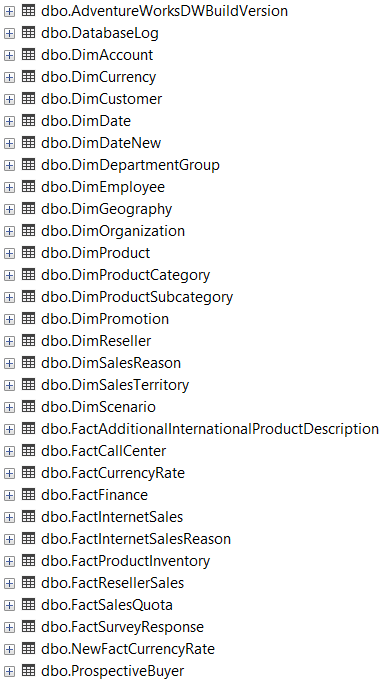Também devemos verificar se a atualização foi bem-sucedida consultando os anos em uma das tabelas. Notei que as vendas parecem ter sido atualizadas, embora os anos da tabela "Dimension Date" não tenham sido.
Por isso, criei uma nova tabela de datas com o código SQL, que cria as colunas DateKey (para vincular a tabela com as outras) e FullDate. O restante das colunas, como Dia, Mês, Ano, etc., pode ser facilmente extraído dessas colunas no Power BI.
(A visualização de códigos por aqui não é tão boa. Mas você pode encontrar e baixar todos os scripts se encontram no Github do projeto)
CREATE TABLE DimDateNew (
DateKey INT PRIMARY KEY, FullDateAlternateKey DATE
);
DECLARE @StartDate DATE = '2019-01-01';
DECLARE @EndDate DATE = '2023-12-31';
DECLARE @CurrentDate DATE = @StartDate;
DECLARE @DateKey INT = YEAR(@StartDate) * 10000 + MONTH(@StartDate) * 100 + DAY(@StartDate);
WHILE @CurrentDate <= @EndDate BEGIN INSERT INTO DimDateNew (DateKey, FullDateAlternateKey)
VALUES
(@DateKey, @CurrentDate);
SET
@CurrentDate = DATEADD(DAY, 1, @CurrentDate);
SET
@DateKey = YEAR(@CurrentDate) * 10000 + MONTH(@CurrentDate) * 100 + DAY(@CurrentDate);
END;
Agora organizamos as tabelas de dimensões e fatos que precisamos e criamos as visualizações para elas. Também é possível fazer o download do arquivo CSV e carregá-lo no Power BI. Porém, prefiro criar as visualizações, pois o PBI também pode se conectar ao banco de dados e carregar apenas as visualizações. Dessa forma, caso seja necessário adicionar uma coluna em alguma tabela, basta alterar o código SQL e, após a execução, o Power BI atualizará os dados, sem a necessidade de salvar e carregar outro arquivo CSV.
--------------------------------
----Criating Fact Sales View----
--------------------------------
CREATE VIEW fSales AS
SELECT
fis.[ProductKey],
fis.[OrderDateKey],
fis.[DueDateKey],
fis.[ShipDateKey],
fis.[CustomerKey],
dg.[EnglishCountryRegionName] AS StoreCountry,
-- Country of the store where the product was bought
fis.[SalesOrderNumber],
fis.[SalesAmount]
FROM
FactInternetSales fis
JOIN DimCustomer dc ON fis.CustomerKey = dc.CustomerKey
JOIN DimGeography dg ON fis.[SalesTerritoryKey] = dg.[SalesTerritoryKey]
WHERE
fis.OrderDateKey BETWEEN '20200101'
AND '20221212';
---------------------------------------
----Criating dimension Product View----
---------------------------------------
CREATE VIEW dProduct as
SELECT
p.[ProductKey],
p.[ProductAlternateKey] AS ProductItemCode,
p.[EnglishProductName] AS [Product Name],
ps.EnglishProductSubcategoryName AS [Sub Category],
-- Joined in from Sub Category Table
pc.EnglishProductCategoryName AS [Product Category],
-- Joined in from Category Table
p.[Color] AS [Product Color],
p.[Size] AS [Product Size],
p.[ProductLine] AS [Product Line],
p.[ModelName] AS [Product Model Name],
p.[EnglishDescription] AS [Product Description],
ISNULL (p.Status, 'Outdated') AS [Product Status] --Changed Status from Null to 'OutDated'
FROM
DimProduct as p
LEFT JOIN dbo.DimProductSubcategory AS ps ON ps.ProductSubcategoryKey = p.ProductSubcategoryKey
LEFT JOIN dbo.DimProductCategory AS pc ON ps.ProductCategoryKey = pc.ProductCategoryKey
----------------------------------------
----Criating dimension Customer View----
----------------------------------------
CREATE VIEW dCustomer as
SELECT
c.customerkey AS CustomerKey,
c.firstname AS [First Name],
c.lastname AS [Last Name],
c.firstname + ' ' + lastname AS [Full Name],
CASE c.gender WHEN 'M' THEN 'Male' WHEN 'F' THEN 'Female' END AS Gender,
c.datefirstpurchase AS DateFirstPurchase,
g.city AS [City],
-- Joined in Customer City from Geography Table
g.EnglishCountryRegionName as [Country],
-- Joined in Country from Geography Table
g.StateProvinceCode as [State] -- Joined in State from Geography Table
FROM
DimCustomer as c
LEFT JOIN dbo.dimgeography AS g ON g.geographykey = c.geographykey
----------------------------------------
----Criating dimension Calendar View----
----------------------------------------
CREATE VIEW dCalendar AS
SELECT
*
FROM
DimDateNew
WHERE
DateKey BETWEEN '20200101'
AND '20221212'
Após isso, podemos ver que as visualizações foram criadas na guia "View":
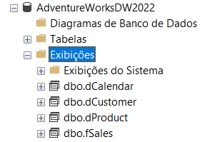4. Importar Dados no Power BI
Agora que temos nossos dados, podemos conectar o servidor SQL no Power BI:
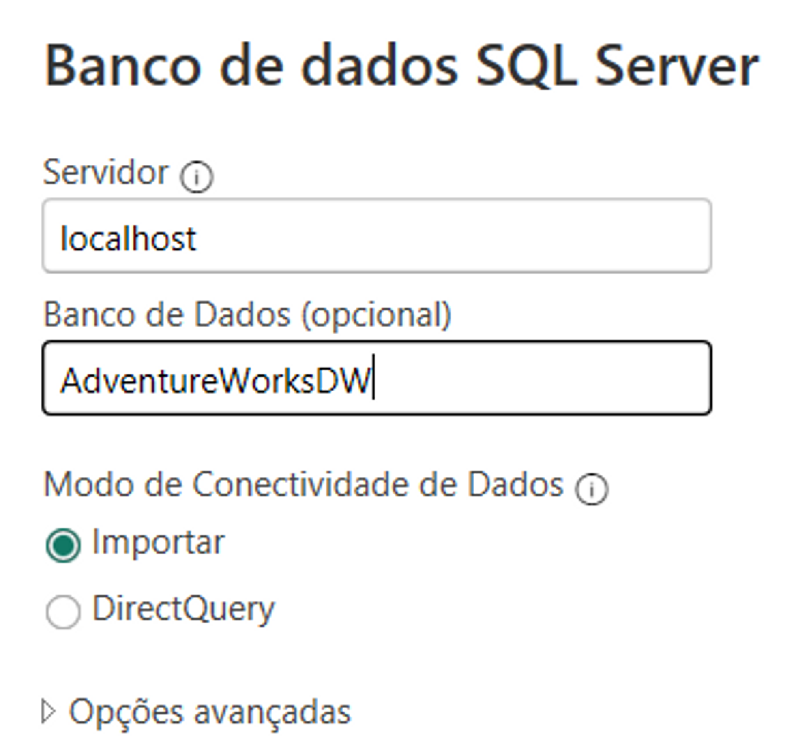E, em seguida, selecionamos as visualizações que criamos:
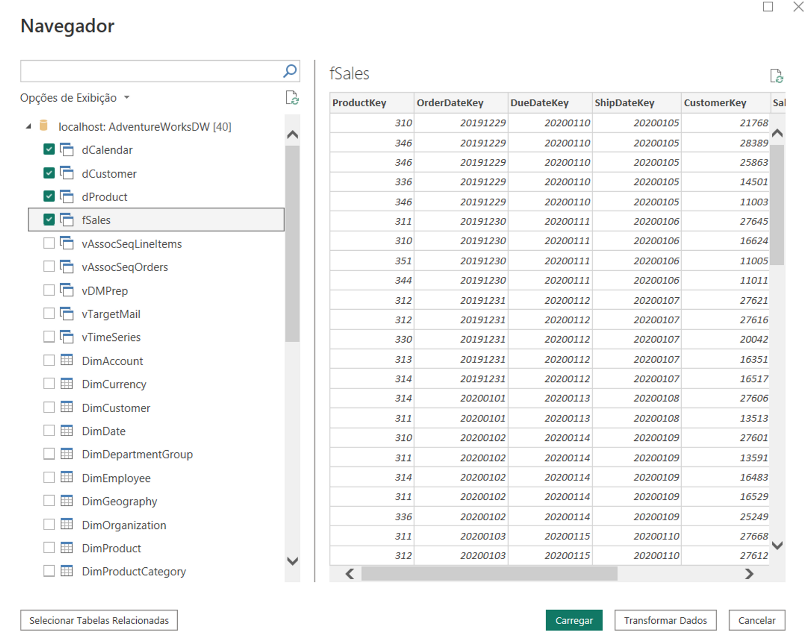4.1 Adicionando a coluna de continente
Considerando os negócios globais da Adventure Works, decidimos incluir um gráfico de Vendas por Continente no painel. No entanto, a tabela de dimensão "Geografia" inicialmente não possuía uma coluna de continente. Para realizar isso, basta procurar uma lista de países e seus continentes na web.
Em vez de baixar e criar uma nova tabela, no Editor de Consultas do Power BI, clique em "Nova Fonte" > "Web" e cole o link do site com os países e continentes.
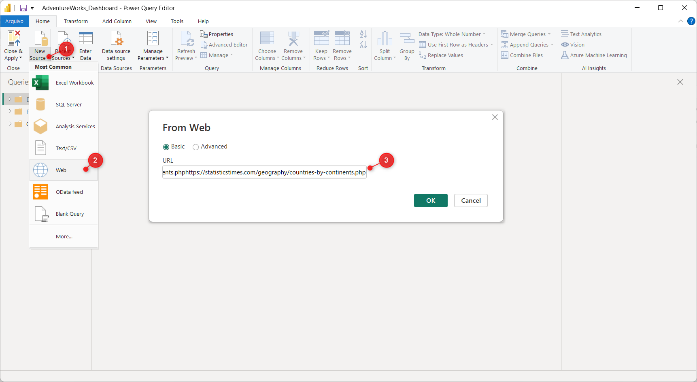O Power BI encontrará algumas tabelas no site e selecionaremos aquela que estamos procurando:
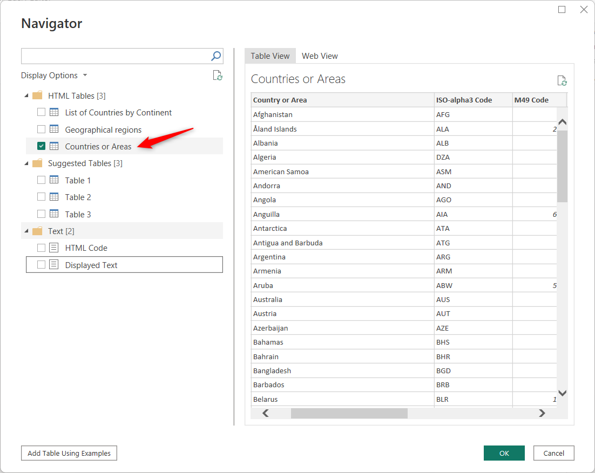Após carregar a tabela no Editor de Consultas, podemos fazer um "Merge de Consultas" com a tabela dcustomer pelo país e adicionar a coluna de continente a ela.
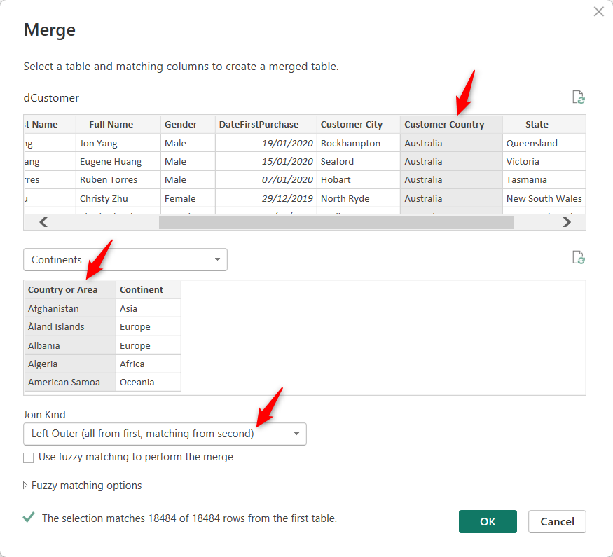5. Modelo de Dados
Agora podemos vincular todas as tabelas e implementar um modelo Star Schema, que permite que as dimensões atuem como filtros para análise.
Observe que todas as dimensões estão vinculadas à tabela de fatos em um relacionamento 1 para muitos:
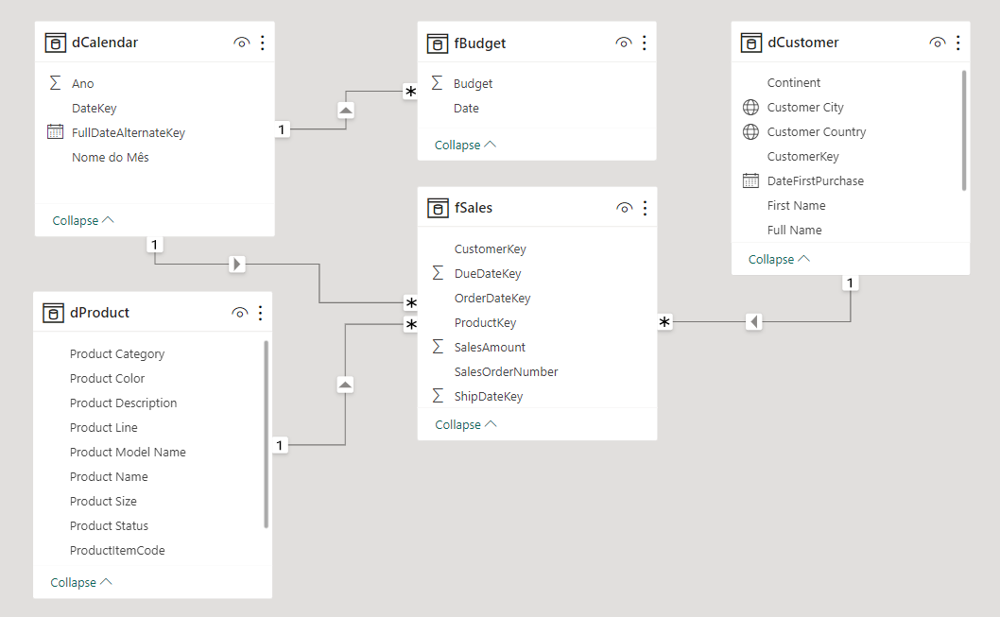6. Visualização de Dados
Nesta seção, vou descrever o layout do painel hospedado no servidor da Microsoft, que pode ser acessado por este link: Visão Geral de Vendas
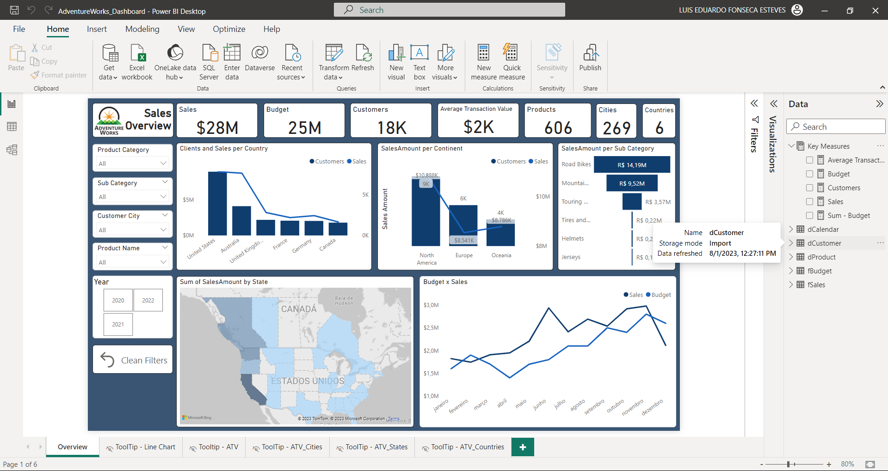6.1 KPI Tooltip:
No gráfico de Linha Orçamento x Vendas ao longo do tempo, temos um KPI Tooltip, quando passamos o mouse sobre ele, podemos ver detalhes dinâmicos do Orçamento e Vendas naquele mês específico.
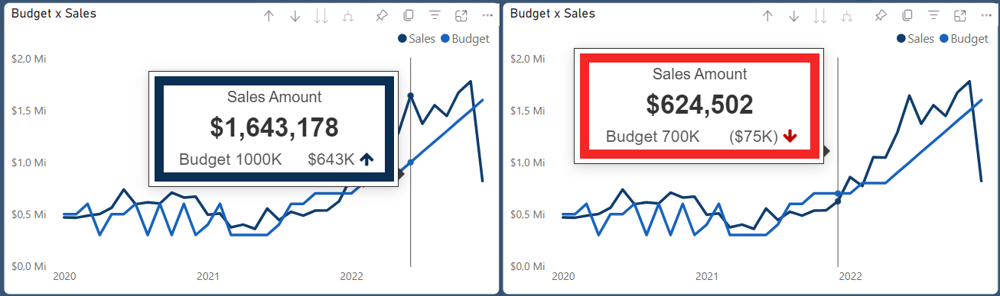Para fazer isso, é necessário baixar o Dynamic KPI Card by Sereviso nas opções "obter mais visões":
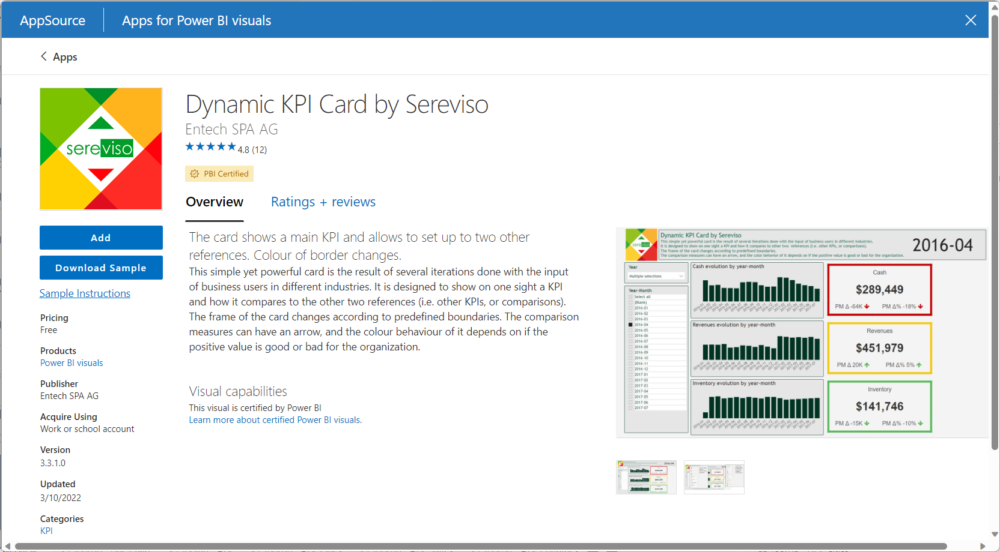6. Próximos Passos
- Análise de Recursos Humanos: Explore a distribuição de funcionários por departamento, cargo e localização. Analise a antiguidade dos funcionários e métricas de desempenho.
- Clientes: Analise o comportamento dos clientes, segmentação, fidelidade e taxa de perda para melhorar a satisfação e a retenção de clientes.
- Análise de Lucratividade: Visualize as margens de lucro, análise de custos e lucro por categoria de produto para otimizar a rentabilidade.
- Previsão de Vendas: Explore as tendências de vendas, crie modelos de previsão e analise o pipeline de vendas para um melhor planejamento.
- Gerenciamento de Estoque: Otimizar o gerenciamento de estoque visualizando a rotatividade de estoque, análise de esgotamentos e implementando a análise ABC.
- Marketing e Campanhas: Mensure a eficácia das campanhas de marketing, rastreie as respostas dos clientes e analise o retorno do investimento em marketing.
Obrigado por ler o meu projeto!
Caso tenha alguma dúvida ou sugestão, sinta-se a vontade para entrar em contato.
Clique abaixo para voltar à pagina principal.